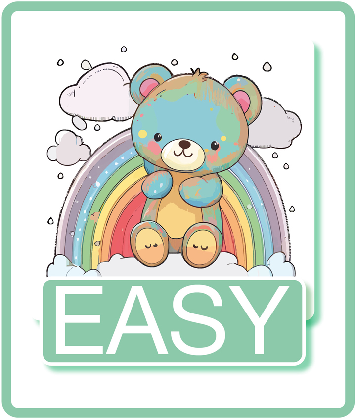

Empirical oral AntibioticS for possible UTI in well-appearing Young febrile infants (EASY)
Eligibility
Local study conflicts
- None
Inclusion Criteria:
- 29 to 90 days of age (Infants from their 29th day of life to their 90th day of life inclusive. Day of birth is day 1 of life)
- Suspected urinary tract infection (UTI) requiring treatment with antibiotics
- History of fever as defined as temperature ≥38°C measured by any method OR likely fever in last 24 hours including subjective fever reported by caregiver
- Abnormal urinalysis defined as either:
- Abnormal urinary dipstick test (leucocyte esterase ≥1+, or nitrite ≥Trace)
- Abnormal urine microscopy (≥5 white cells per high-power field in centrifuged urine or ≥10 white cells per mm3 in un-centrifuged urine or bacteriuria with any bacteria per high power field)
Or
- Abnormal urinary dipstick test (leucocyte esterase ≥1+, or nitrite ≥Trace)
- Well on global clinical assessment using the paediatric assessment triangle assessed by a consultant grade doctor
Exclusion Criteria:
- Born at <30 weeks gestation
- Discharged from hospital more than 7 days after birth
- Required re-admission to hospital after birth for more than 24 hours
- Known or suspected structural renal abnormality
- Evidence of sepsis and/or meningitis (appear unwell, shock, hypotension, altered mental state, bulging fontanelle, lumbar puncture suggestive of bacterial meningitis)
- Received vaccination within 48 hours of attendance
- Sodium < 128mmol/l on lab or blood gas sample
- Potassium > 6.5 mmol/l on lab sample
- Plasma creatinine > 50 micromol/l
- Inability to tolerate oral medication
- Urine sample was not sent for culture
- Received additional antibiotics (with the exception of the parenteral antibiotic administered within 24 hours of hospital attendance)
If the patient is eligible:
Step by Step Guide to Recruitment:
In standard working hours; 9-5
- Please contact the ED Research Team when eligible patients arrive in ED:
Send the ED Research Team a message via Epic chat "ED research Team" or phone 217907
Out of hours and weekends:
Essential first steps
- Find the next Screening number in the EASY Yellow Folder containing the paperwork.
- Assess Eligibility (NB: only a Consultant can determine if a baby is well enough – point 5 of inclusion criteria – and this must be documented in the notes
- Pick up patient pack from the corner bookshelf in the clinical workstation:
- Patient information sheet
- Consent form
- Clear plastic folder (all questionnaires parents need to complete for the trial)
- Questionnaire on consent
Consenting the patient formally
- Now approach the parents
- Provide the parents with the PIS and consent form to complete
- If they decline – offer them the questionnaire on consent – and record the screening number
Randomisation procedure
- Randomise - Login (abdn.ac.uk) (please keep your username and password somewhere readily available)
Carrying out the intervention:
- Document in the notes using .EASYRANDOMISATION and inform the paediatric team
Documentation
- Complete the PedsQL Infant Questionnaire (in the pack)
- The small A5 clear pack contains questionnaires to be completed by the parents at 36 hours, on day 7 and on day 28. Write the screening and randomisation number on each pack envelope and each questionnaires before giving this to the parents.
- Give Parents the pack
- Place the completed consent form and questionnaire in the post box behind reception

Disposition and follow-up:
If admitted:
- Any necessary follow will be arranged in working hours by the research team.
If discharged:
- Followed up at 24 hours, 48 hours, 7 days and 28 days by us with a phone call; +/- a 6 week follow up at clinicians discretion.
Links for further information:
Link to information for clinicians (links to protocol embedded within)Link to local training